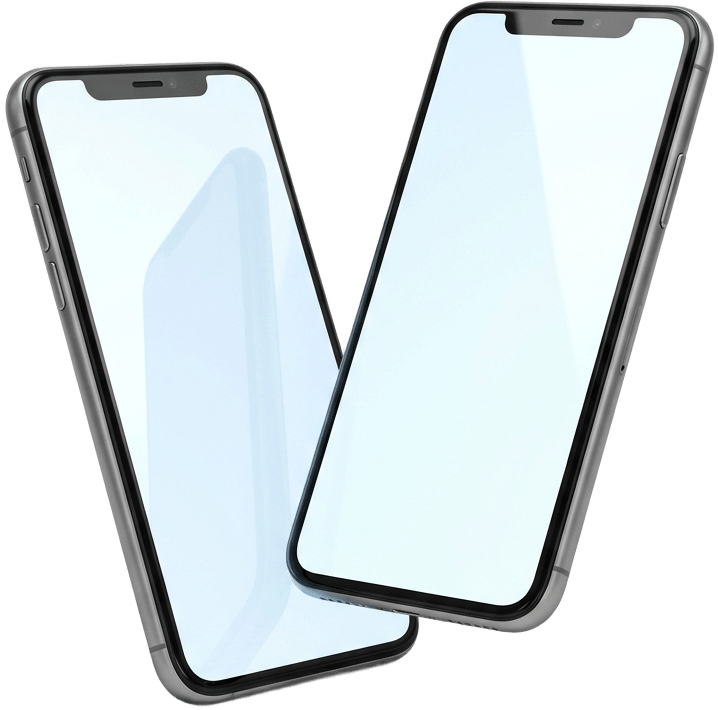

Pessoas idosas ou no espectro autista identificam o formato e as cores das embalagens antes de ler textos longos ou confusos. O NurseGuard salva a foto real do remédio diretamente no celular e a exibe no alarme para eliminar qualquer risco de confundir as embalagens.
Nunca mais
esqueça
um remédio.
Aplicativo de lembrete de medicamentos, feito para idosos, TDAH, TEA e familiares.

Alarme visual
Identifique o Remédio pela Foto.
Leitura fácil
Cores Suaves e Tela Limpa.
Interfaces modernas abusam de degradês, luzes ou efeitos que piscam e efeitos que confundem, que geram gatilhos de ansiedade. Nossa engenharia adota cores simples e letras grandes com alto contraste, permitindo que mentes com TDAH mantenham o foco no que importa: a saúde.
Remédio na hora certa
Alarme que Avisa de Verdade.
Diga adeus às notificações ignoradas. O alarme do NurseGuard foi projetado para aparecer por cima de qualquer outra tela e o som continua tocando até você clicar no botão indicando que tomou o remédio.
Segurança total
Privacidade Total: Funciona sem Internet.
O NurseGuard opera sob o princípio de guardar tudo no seu celular. Seus dados médicos, horários e fotos de remédios não são enviados para empresas na internet nem alimentam propagandas ou empresas de publicidade. O banco de dados permanece trancado e seguro dentro do seu celular.
PASSO A PASSO
Como o App Funciona na Prática
Três etapas lineares e sem complicações para o seu dia a dia.
01
Tire uma foto
Abra o aplicativo e tire uma foto da caixinha ou do próprio comprimido. Isso cria um lembrete visual perfeito para a memória.
02
Defina o horário
Escolha a hora em que precisa tomar o medicamento usando botões bem grandes e nítidos. Sem telas confusas.
03
Pronto! Agora é só aguardar
Na hora exata, o alarme vai tocar exibindo a foto que você salvou por cima de qualquer outra tarefa do telefone.
PÚBLICO-ALVO
Feito para Quem Precisa de Clareza
Para Idosos e Cuidadores
Traz total autonomia para o idoso identificar os remédios sem depender de letras miúdas, oferecendo tranquilidade para toda a família.
Para Mentes com TDAH
Evita aquela dúvida clássica se você já tomou ou esqueceu a dose, pois o aplicativo registra o momento em que você clica.
Para Pessoas no Espectro Autista (TEA)
Ajuda a manter a rotina estável por meio de uma interface limpa, sem anúncios ou efeitos visuais que geram sobrecarga.
HISTÓRIAS REAIS
O Alívio Mental de Quem Usa Diariamente

"O NurseGuard mudou minha rotina com meu pai. Ele agora toma os remédios de pressão no horário exato, sem eu precisar ligar cobrando a cada 2 horas."

"Sempre esquecia se já tinha tomado o remédio do TDAH ou se estava apenas na minha cabeça. O app tirou esse peso e a ansiedade do meu dia a dia."
DÚVIDAS FREQUENTES
Perguntas Comuns sobre o App
Respostas diretas e sem termos técnicos complicados.
O aplicativo é realmente gratuito?
Sim. Grátis para sempre até 5 remédios cadastrados — sem cartão de crédito. Se você precisar de mais, o plano completo libera até 20 remédios por R$ 24,90 uma única vez. Sem assinatura, sem renovação automática, sem surpresa no cartão.
Preciso de sinal de internet?
Não. Ele funciona sem internet e sem Wi-Fi. Você pode usar em qualquer lugar, de forma totalmente offline.
Como as fotos ficam guardadas?
Todas as fotos e dados de medicamentos salvos ficam guardados exclusivamente dentro do chip do seu próprio celular.
Pronto para cuidar melhor da sua saúde?
Grátis para sempre até 5 remédios. Precisa de mais? Até 20 remédios por R$ 24,90 uma única vez.
Sem assinatura, sem renovação.